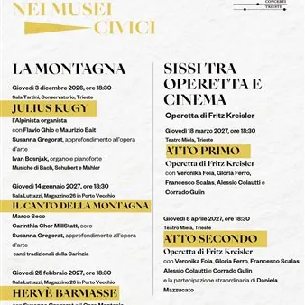

da gio 3 dic a gio 8 apr · dalle 18:30
La Società dei Concerti nei Musei Civici
Dal 3 dicembre 2026 all'8 aprile 2027 torna La Società dei Concerti nei Musei Civici, la rassegna che intreccia musica, arte e racconto per scoprire prospettive inedite sulla storia e sulla cultura di Trieste. Cinque incontri-concerto, due percorsi da esplorare: Trieste e la…
 Indicazioni
Indicazioni
- Costi e prenotazioni
- Costo non indicato · Prenotazione non indicata
- Programma
- Programma da verificare. Apri la fonte ufficiale per orari e possibili aggiornamenti.
- In caso di maltempo
- Nessuna indicazione specifica pubblicata.
- Note
- Acquisito automaticamente dalla fonte.
L’EVENTO
Descrizione completa
Dal 3 dicembre 2026 all'8 aprile 2027 torna La Società dei Concerti nei Musei Civici, la rassegna che intreccia musica, arte e racconto per scoprire prospettive inedite sulla storia e sulla cultura di Trieste.
Cinque incontri-concerto , due percorsi da esplorare:
Trieste e la montagna
Tre appuntamenti dedicati al rapporto tra la città e il mondo dell'alpinismo, tra grandi protagonisti, paesaggi e opere d'arte.
Sissi tra operetta e cinema
Due incontri dedicati al mondo dell'operetta e alla figura di Fritz Kreisler, tra teatro, musica e suggestioni cinematografiche.
Programma
Giovedì 3 dicembre 2026 ore 18.30
JULIUS KUGY - L'alpinista organista
Sala Tartini - Conservatorio
Giovedì 14 gennaio 2027 ore 18.30
IL CANTO DELLA MONTAGNA
Sala Luttazzi - Magazzino 26 in Porto Vecchio
Giovedì 25 febbraio 2027 ore 18.30
HERVE' BARMASSE
Giovedì 18 marzo 2027 ore 18.30
ATTO PRIMO - Operetta di Fritz Kreisler
Teatro Miela
Giovedì 8 aprile 2027 ore 18.30
ATTO SECONDO - Operetta di Fritz Kreisler
Abbonamento ai 5 incontri da € 62 per i Soci SdC abbonati alla Stagione 95.
Disponibili anche biglietti singoli.
IL PROGRAMMA
Programma e orari
Appuntamenti raccolti dalle fonti elencate. Dove manca un orario, non è ancora disponibile in questa scheda.
Programma pubblicato
- Dal 2026-12-03 al 2027-04-08
INFORMAZIONI UTILI
Prima di partire
- Controllare la fonte prima di partire.
ORGANIZZAZIONE